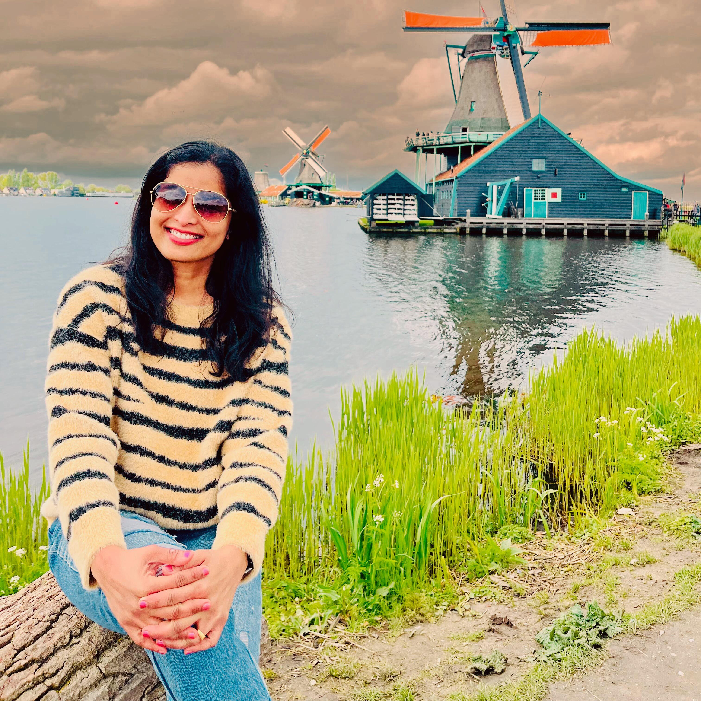
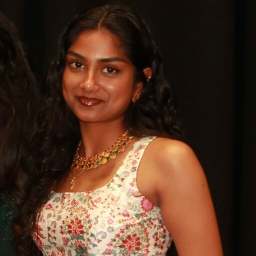
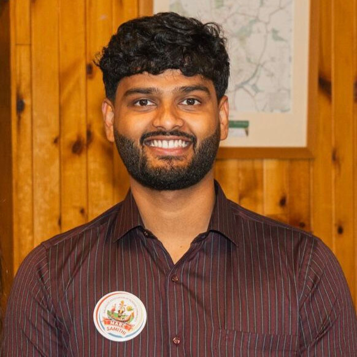
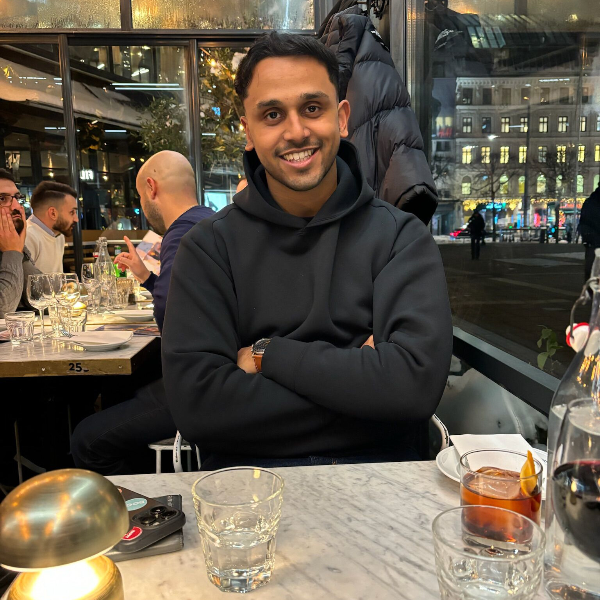
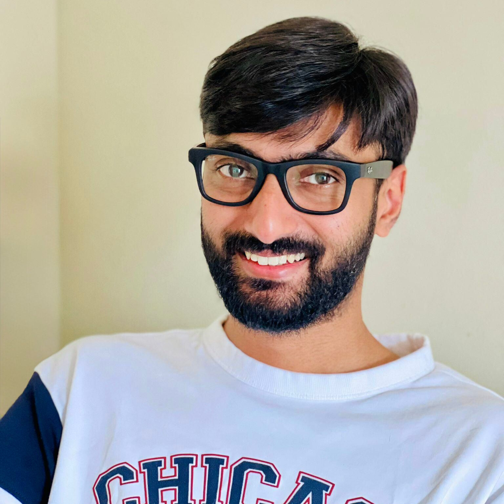
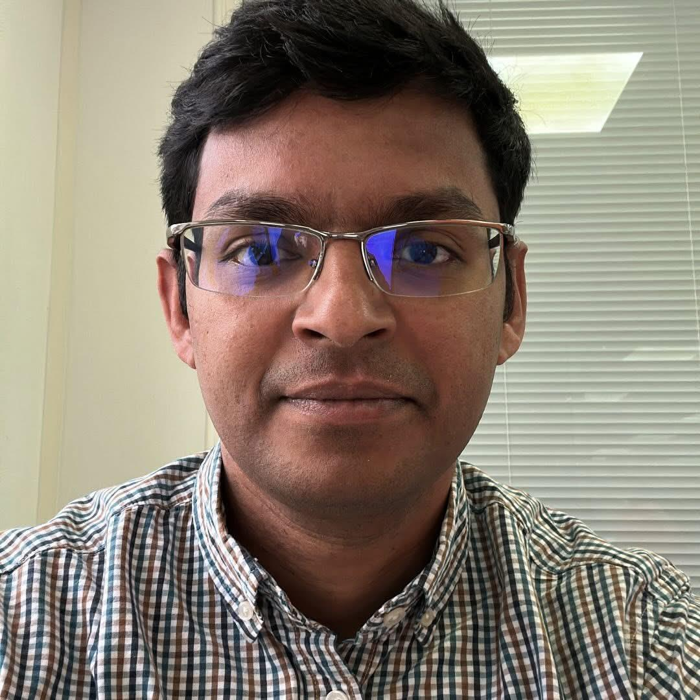

General SecretaryAncy Jose
Oversees administration, communication, and smooth coordination of MARC activities.
MARC is a community of Malayalee families in Reading, UK — connecting hearts and celebrating culture through festivals, family gatherings, youth initiatives, and sports activities.
MARC — the Malayalee Association of Reading Community — was established in the early 2010s to fulfil a long-cherished aspiration of the Malayalee community (natives of the Indian state of Kerala) living in and around Reading, United Kingdom. Since its formation, MARC has grown into a trusted, close-knit community that brings families together while nurturing a strong sense of belonging and shared identity.
At its core, MARC operates with integrity, inclusiveness, and a strong spirit of social responsibility. We provide a structured platform for Malayalees to connect and collaborate, while preserving our moral, social, cultural, educational, literary, and artistic heritage. At the same time, MARC actively encourages positive integration with UK culture and community life, supporting members as they build meaningful lives in a multicultural environment.
MARC envisions a sustainable and self-strengthening community — one that supports both present and future generations, while keeping our cultural roots strong in a global setting. This vision is reflected in the energy and participation of our members: today, MARC proudly represents 85+ families, 320+ members, 85+ school-going children, and 60+ youth members.
Our members contribute meaningfully to UK society across a wide range of professional sectors including healthcare, business, IT, engineering, construction, biotechnology, and more. Beyond community celebrations and activities, MARC also actively participates in charity initiatives and remains committed to supporting wider social needs — strengthening not only our own community but also the society we live in.
Guided by the dedication of our Samithi members and volunteers, MARC continues to evolve as a supportive and forward-looking association. Together, we are building a community that connects hearts, celebrates culture, and creates a lasting foundation for generations to come.
Details of the current MARC Samithi will be published here shortly.
The previous committee members who supported MARC’s activities and events.

General SecretaryOversees administration, communication, and smooth coordination of MARC activities.
Plans and coordinates MARC events, schedules, and volunteer support.
Supports youth engagement, participation, and youth-led community initiatives.

Youth SecretaryHelps organise youth programs, activities, and coordination with families.

Youth SecretaryEncourages youth participation and supports youth event planning and execution.

Youth SecretarySupports youth initiatives, team coordination, and community volunteering.

Event CoordinatorAssists in organising events, logistics, and on-day coordination for MARC programs.
Supports MARC operations, member communication, and coordination of activities.

President & TreasurerProvides leadership for MARC and manages finances, budgeting, and approvals.
We are actively seeking long-term partnerships and event sponsors who wish to engage with a vibrant, family-focused community.